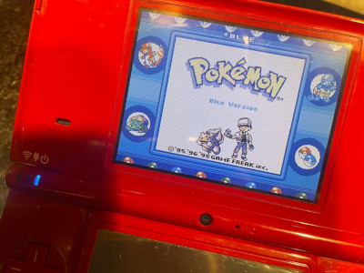

Onde jogo?
Em um Nintendo DS! Eu comprei um DSi a poucos dias. É a experiência mais próxima da original que eu pude ter acesso, e tem valido cada centavo até aqui.
Os jogos da franquia Pokémon com toda certeza foram feitos para portáteis. Quando estou dentro de casa, não sinto vontade de jogar. Mas, quando levo pra qualquer lugar que seja, parece bem mais interessante. É uma excelente maneira de passar o tempo certamente mais saudável do que se afundar em Reels ou YouTube Shorts.
